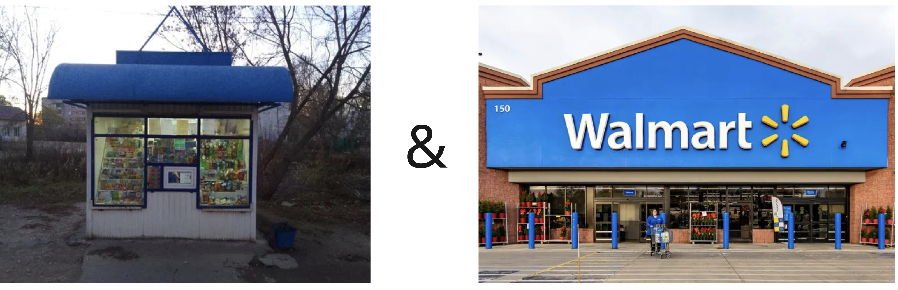
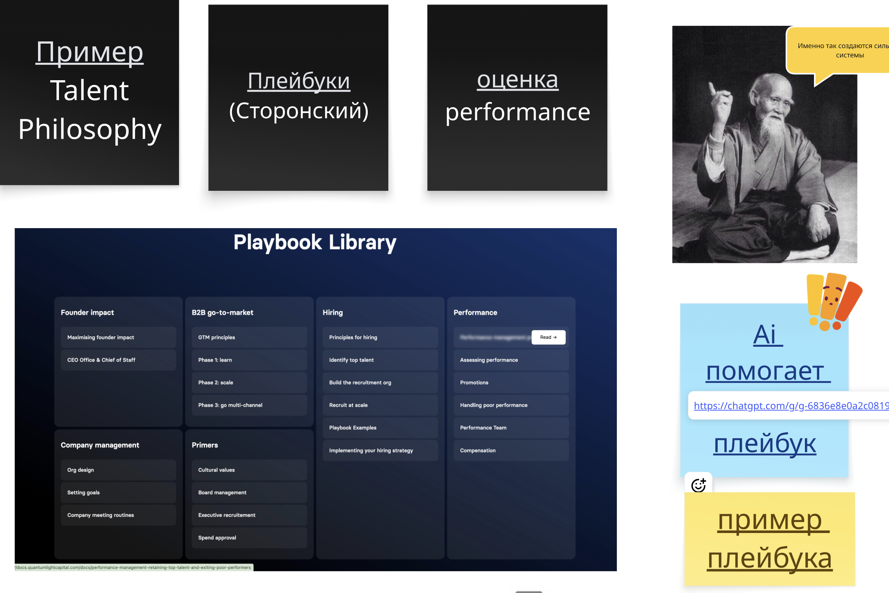
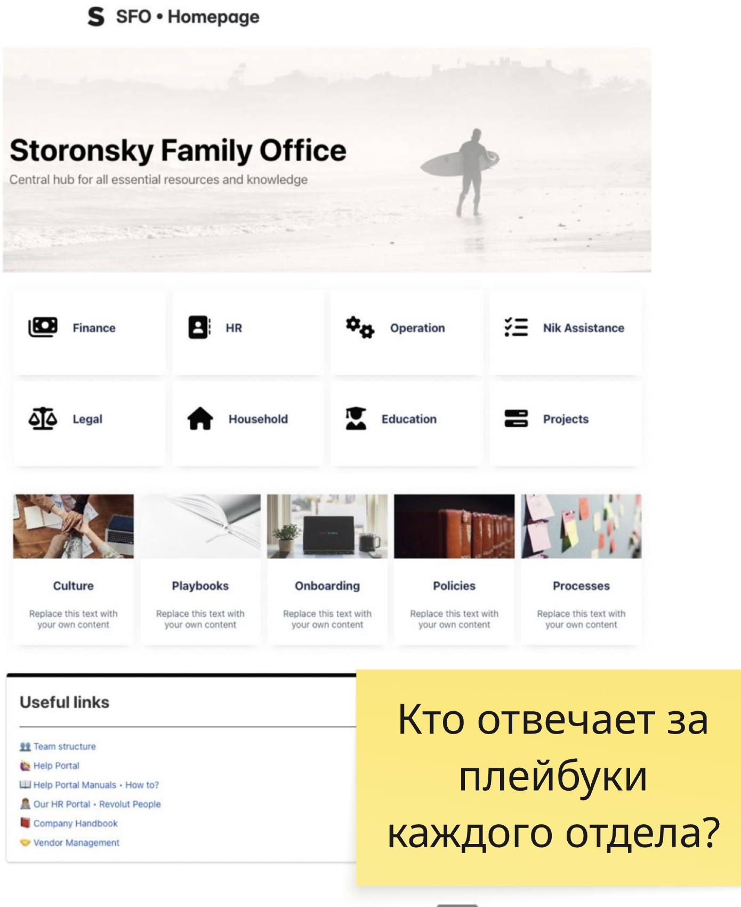

Дебаг бизнеса и
стратегическая сборка
Главный навык управленца: быстро находить, где именно тормозит рост — и превращать это в масштабируемые технологии, которые исполняет команда.
Дебаг — это ключевая мышца управленца. Она отвечает за execution.
Можно иметь гениальную стратегию и кучу дипломов. Но если execution на уровне табуретки — результата не будет. Средняя стратегия при сильном execution бьёт гениальную стратегию при слабом. Дебаг — это и есть мышца исполнения.
Наша задача: через дебаг собрать масштабируемые технологии
Что такое дебаг и зачем это мышца №1
точность · петля улучшенийЧто вы должны создавать — масштабируемые технологии
ларёк vs Walmart · примерыКак дебажить: находим бутылочные горлышки
Исикава · 5 почему · ICEРезультат дебага — playbook в библиотеку
и его обязательно исполнятьФокус, ритм и второй мозг для дебага
как внедрить у себяДебаг — это про точность, а не про количество действий
Мастер починил машину одним ударом молотка и выставил счёт на 100 $.
«За что? Вы всего лишь стукнули молотком!»
— 1 $ за удар и 99 $ за знание, куда бить.
Дебаг = снайперский выстрел
Не бить по воробьям из пушки. Знать, куда, с какой точностью и силой ударить, чтобы дойти до результата.
«Мы делаем ооочень много действий, а роста нет» — это и есть отсутствие дебага.
Дебажим не код, а процессы
Bug = «жук». Первый баг — реальный жук, окисливший плату первого компьютера. С тех пор код, который не работает, идут «дебажить».
- Разбить на блоки и найти ошибку
- Протестировать гипотезы
- Закоммитить то, в чём красная зона
- Разложить процесс на составляющие
- Найти, где именно бутылочное горлышко
- Расшить его и зафиксировать в playbook
Петля вечных улучшений
цель
амбициозная цель
Все инструменты сходятся в одну систему
Модель показывает
Предиктивная модель уже подсвечивает, где красная зона. Но это только табличка.
Дебаг оживляет
Метод «почему просели / что чинить». Превращает цифры в конкретные проекты.
Playbook закрепляет
То, что сработало, становится повторяемой технологией и новой целью.
Дебаг — это не только красное → зелёное
Превращаем 🔴 → 🟢
Находим узкое место, расшиваем, метрика восстанавливается. Это все умеют помнить полгода.
Превращаем 🟢 → масштабируемое 🟢
Сработало сверх плана — задаём вопрос «как теперь это повторить системно?». А мы принимаем это как «само собой».
Задача предпринимателя — создать систему, которая генерирует ценность и захватывает её часть в виде прибыли — воспроизводимо и без личного участия на каждом шаге.
Найти повторяемую модель создания и захвата ценности — а потом масштабировать её быстрее, чем это сделают конкуренты.



Дано: подписка на e-байки курьерам в Нью-Йорке, дорогой CAC, «пилим фабрику креативов», льём в перформанс.
Дебаг от первых принципов: курьера легко таргетировать вживую → команда амбассадоров-промоутеров.
Дальше: сначала плохо → не сдались, уволили лида, оставили «амбассадора с результатом» → тесты, улучшение каждого этапа → мечети, хостелы, комьюнити → 2-уровневая мотивация.
Узкое место ограничивает всю дорогу
Красных зон много. Как выбрать ТОП-1?
PHADI, а не HADI
HADI — улучшаем всё подряд. PHADI — сначала самая ключевая боль (P — problem). Малой команде с ограниченным ресурсом — всегда PHADI.
Считаем вес в деньгах (ICE)
Маленькая матмодель: сколько денег принесёт гипотеза. Не можете сами — попросите Claude задать вопросы и посчитать за 10–15 мин, потом перепроверить себя.
Сказать «да» одной гипотезе = сказать «нет» двадцати другим (или на парковку).
У любого бизнеса аудиторы найдут >200 точек роста. Их всегда много. Навык — выбрать снайперский выстрел.
«Не приходи, если решение по году не приносит >100 млн» — так растёт твой внутренний чек.
Бутылочное горлышко всегда сводится к метрике
«Расфокус», «время», «execution» — это не горлышки. Называй вещи своими именами и приземляй на цифру.
| Говорят так | А горлышко на самом деле | Метрика |
|---|---|---|
| «Не хватает времени» | Тайм-менеджмент — ты управляешь 24 часами | часы на ТОП-задачи |
| «Низкий execution» | Падает чистая прибыль / конверсия | ЧП, CR, выручка/сотрудник |
| «Проблема с людьми» | Скорость и качество вывода менеджеров | CR новичка, срок вывода |
| «Мало лидов» | Провал квалификации: 70% не доходят | КВАЛ, доля целевых |
Чем расшиваем горлышко — 8 приёмов
Декомпозиция
Разложить процесс на составляющие и срезы
По шагам
Разложить проблемный процесс — где именно сбоит
Research (90%)
Пойти на рынок, узнать реальные бенчмарки
До элемента
Провалиться до конкретной сделки / ученика / урока
Дерево метрик
Собрать бенчмарки → красное/зелёное → где трабл
До данных
Своими глазами: карточка в CRM, звонок, БД
Один ответственный
Картина мира: кто за что и за какую метрику
Бенчмарк внутри
Сильный vs слабый продажник → в чём разница
Диаграмма Исикавы — раскладываем «слона» по костям
Готовый промпт — просто скопируй и начни дебажить
«5 почему» — быстрый спуск до корня
Что делаем на уровне Пети?
- Ставим напоминание и уведомление в предиктивной модели
- Петя ежедневно отчитывается о целевом трафике к вечеру
- Разворачиваем систему координации, где руками не делаем ничего — но повториться это больше не может
Готовый промпт для метода «5 почему»
Крестик / галочка через research
- Python устарел → ресёрч спроса: нет, нужен
- Другие не продают → витрины: продают все
- Продукт плохой → опровергли
- Не умеем продавать → метрики не в бенчмарке: CR на 40% ниже рынка
Как читать дерево
✕ крестик — гипотеза опровергнута ресёрчем.
✓ галочка — подтверждённый корень.
Когда проверяешь цифрами и бенчмарками — эмоции и самоуверенность отпадают, остаются веса.
Ничто так не отрезвляет, как открыть 10 сделок в CRM
РОП винит маркетинг, маркетинг винит продажи — а полтысячи лидов просто зависли.
Вице-президент Hilti (10 000+ сотрудников) сам приходит на онбординг новичков и принимает экзамены. Пока сам не посмотрел — не знаешь, что там на самом деле.
5 правил, чтобы дебаг был честным
Цифрами
Проблема обоснована на цифрах — насколько именно замедлились
Все варианты
Убедиться, что рассмотрели все ветки, а не первую пришедшую
Сильные стороны
Заканчиваем на «как усилим то, что работает»
Вглубь и вверх
Не тот продукт / рынок — тоже «верхний» фактор
Без эмоций
Факторный анализ — только цифрами, не мнением
В результате формируется вывод — в деньгах
- Рост заявок +35% → +3,5 млн ₽
- CR лид→продажа 3,2% → 5,7% (+78%) → cash-in +7,5 млн ₽
- Средний чек +10% → +2 млн ₽ к приросту
Каждый фактор — с ответственным и суммой. Дальше: как усилим сильные стороны → гант → playbook.
Разбираем не только «почему не растём», но и «почему выросли».
Как только нашли, что реально сработало — это сакральное знание. Кидаем весь ресурс команды, чтобы сделать эту зону ещё сильнее.
Это понимание, во что инвестировать деньги и ресурс команды.
Ошибка → вывод → playbook → технология
Playbook — это как ваша выстраданная ошибка превращается в повторяемую инструкцию. Процесс повторится ещё десятки раз — инструкция должна быть готова заранее.

База лучших практик
Founder impact, B2B GTM, Hiring, Performance, Company management — на каждый процесс своя карточка с бенчмарками.
- Надиктовали голосом процесс → AI собрал playbook
- Он становится частью командной работы
- Для новых сотрудников — готовое решение

Central hub
Все отделы, культура, онбординг, политики, процессы — в одном месте. Это тот же «второй мозг», который мы собирали на прошлом модуле.
Как собрать масштабируемую технологию
1 · Описать технологию
путь / процесс по шагам
2 · Риски
где может сбоить
3 · Где горлышки
узкие места процесса
4 · Лучшие практики
research бенчмарков
5 · Усиление команды
постоянное
6 · PHADI-циклы
цикл улучшения
7 · Один ответственный
+ архитектура ролей
8 · План-факт
и точки контроля
9 · Дебаг 🎯
ядро всей сборки
10 · Плейбуки
в библиотеку
11 · Точки контроля
кто и когда сверяет
12 · Ресёрчи
постоянно на рынке
Фокус руководит в ключевые точки роста
Фокус распылён
Тянем всё подряд по чуть-чуть. Красные точки размазаны по всей пирамиде — нигде не хватает мощности, чтобы сдвинуть.
Шаг 1 — локализуй в деньгах · Шаг 2 — весь фокус в одно горлышко
Находим самое большое узкое место и концентрируем туда ресурс. Где фокус — там результат.
Дебаг каскадируется на все уровни управления
Почему нельзя всё самому
Один человек не расшьёт все горлышки. Внедрять нужно на каждом уровне — иначе команда не прокачивает мышцу.
Полезное давление сверху
Слабый менеджмент = давление не оказывается. Команда всегда копирует модель поведения сверху.
Как часто проводить дебаг
| Когда | Что ловим | Почему важно |
|---|---|---|
| Еженедельно | Операционные просадки (SLA, TLT, конверсии) | Устраняем «красное» раньше, чем оно бьёт по выручке |
| Ежемесячно | Стратегические / системные баги | Калибруем процессы, инструменты, команду |
| После релиза | Ошибки внедрения нового инструмента | Мониторинг каждые 2 дня → экономим нервы и бюджет |
| При скачках метрик | Аномалии ±5% и больше | Быстрая контр-атака вместо «пожаров» |
Дебаг прямо в телефоне — через Telegram-бота
- Смотрит на ваши метрики и сам видит красные зоны
- В нём уже лежит контекст: воронка, продукт, этап бизнеса
- Использует плейбуки дебага — 5 почему, Исикава, дерево гипотез
- Задаёт «почему», предлагает гипотезы и проводит дебаг вместе с вами
Модель — это живой организм
- Всё чисто, нет комментариев
- Нет светофора
- В минутках пусто, нет артефактов
- Плейбуки не формируются
= команда этим не управляет. Слабый execution.
- Вся модель в светофоре
- Комментарии и мысли команды
- В минутках — задачи, артефакты, ссылки
- Плейбуки пополняются
= там есть жизнь. Дебаг работает.
Что сделать до следующей встречи
- Топ-3 бутылочных горлышка: жизнь · отдел · компания — с приземлением на метрику
- Продебажь главное — Исикава / 5 почему / дерево гипотез с ресёрчем
- Посчитай вес в деньгах (ICE) — сколько принесёт расшивка
- Собери Action plan на квартал — забираешь в исполнение
- Опиши 1 технологию как playbook и заведи библиотеку
- Положи плейбуки дебага во второй мозг — дебажь с телефона
Итог модуля
Через дебаг —
к масштабируемым технологиям
Находим горлышко → расшиваем от первых принципов → превращаем в playbook → складываем в библиотеку → команда исполняет. Так строится execution, который двигает результат каждую неделю.